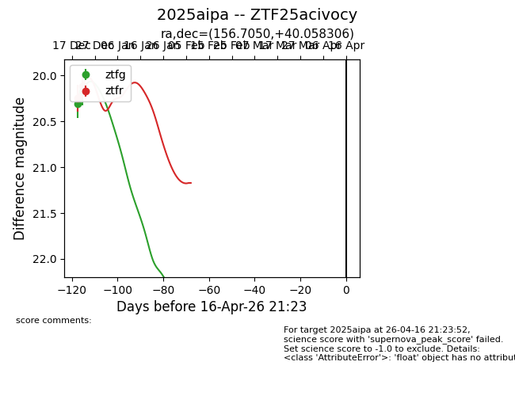
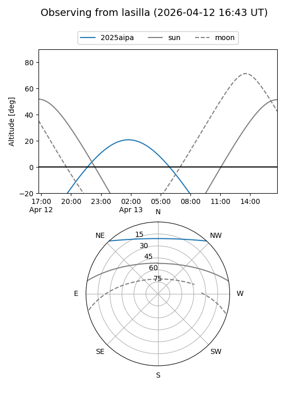
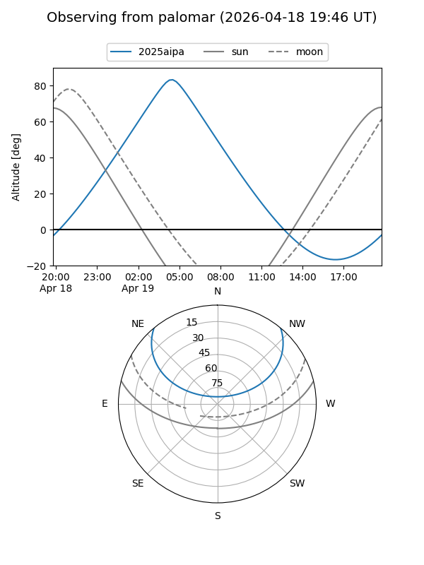

2025aipa
Target 2025aipa at 2025-12-31 18:01
Aliases and brokers:
FINK: link
Lasair: link
ALeRCE: link
TNS: link
YSE: link
alt names
ZTF25acivocy (ztf,fink_ztf)
2025aipa (tns,yse)
Coordinates:
equatorial (ra, dec) = 156.7050,+40.05831
equatorial (HMS+DMS) = 10:26:49.21,+40:03:29.90
galactic (l, b) = (180.1352,+57.50810)
Flags:
Photometry:
last ztfg=20.17, ztfr=20.11
2 ztfg, 2 ztfr detections
Lightcurve

Visibility


Additional plots